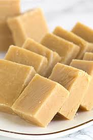

Peanut Butter Fudge

Description:
Probably the easiest version of fudge you can make right hea!
Ingredients:
- 1 lbs white confectioners' coating, broken up
- 18 oz jar peanut butter (creamy or chunky, your call)
Steps:
- Line 8x8 baking dish with plastic wrap and overhang edges a few inches.
- Place broken confectioners' coating into microwave-safe bowl and melt on low (about 5 mins) STIR EVERY 30 SECONDS until smooth and creamy.
- Add in peanut butter and mix until thoroughly combined.
- Spread mixture into the baking dish.
- Refrigerate the fudge until set (1 to 2 hours), lift out of the baking dish using excess plastic wrap for handles. Slice in to squares or bars with knife or pizza cutter.